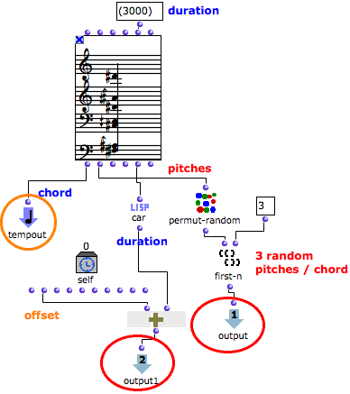

OpenMusic DocumentationHiérarchie de section : OM 6.6 User Manual > Maquettes > Maquette Programming > TempBoxes Programming > Temporal Relations
OpenMusic DocumentationHiérarchie de section : OM 6.6 User Manual > Maquettes > Maquette Programming > TempBoxes Programming > Temporal Relations
Navigation : page précédente | page suivante
Attention, votre navigateur ne supporte pas le javascript ou celui-ci à été désactivé. Certaines fonctionnalités de ce guide sont restreintes.
Example 2 : Defining Temporal Relations Between TemporalBoxes
Applying the Values of a TemporalBox to Other TemporalBoxes
The values of the Self Input Box can be used for defining temporal relations with other TemporalBoxes, via connections between functional inputs and outputs.
Building a Sequence of TemporalBoxes
The chord of TemporalBox #1 is a reservoir for isolated notes that will occur successively in the maquette.
We have programmed the TemporalBoxes so that the initial chord provides one random note to each of TemporalBoxes #2; 3; and 4.
The offset of each TemporalBox is determined by the offset and duration of the preceding box , so that boxes follow each other.

Inside TemporalBox #1
The internal program of the first TemporalBox determines some characteristics of the other TemporalBox.

Inside TemporalBox #1 : using the "pattern-chord"'s data.
- The initial chord lasts 3 seconds. It is connected to the Tempout of TemporalBox #1, and represents its musical value.
- Permut-random performs a random permutation of the chord's pitches. The three first pitches of this permutation are returned by nth-first to the first output of TemporalBox #1.
- On the other hand, the offset of the TemporalBox returned by the Self Input Box, is added with the chord's duration .
- The result is returned to the second output of the TemporalBox.
TemporalBoxes Interaction
The random pitches – output #1 – are returned to all the other TemporalBoxes. The ending time of the box – output #2 – is returned to the next TemporalBox.
Inside TemporalBox #2
|

|
About Last TemporalBox

|
Note that the last TemporalBox has nor output, neither om+ function, but a sequence function. The box has nothing to return to another box. The sequence function allows to evaluate slots before evaluating the TemporalBox, so that its offset is correct. |
Références :
Plan :
Navigation : page précédente | page suivante
A propos...(c) Ircam - Centre Pompidou